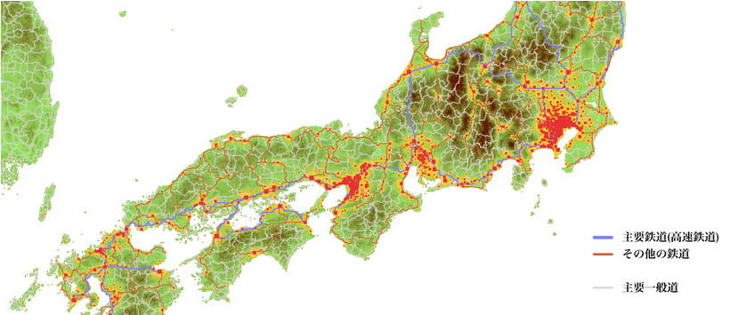

Tada Teruki's Portfolio


Name : 多田 瑛貴 (ただ てるき)
Email : tadateruki.public@gmail.com
Twitter : @PerukiFUN
Github : TadaTeruki / Perukii(old)
Name : 多田 瑛貴 (ただ てるき)
Email : tadateruki.public@gmail.com
Twitter : @PerukiFUN
Github : TadaTeruki / Perukii(old)
所属・経歴 Affiliation
京都府立清明高等学校 (昼間定時制・4年卒コース) 所属
2022年4月 公立はこだて未来大学 システム情報科学部 入学予定
2021/3/31 国立情報学研究所 情報科学の達人プログラム 1期 修了(第二段階)
2018/3/31 龍谷大学付属平安中学校 卒業
活動実績 Works
情報科学研究
主な研究内容
・CurtainRail構造 - 空間データ索引構造


・CurtainRail構造 - 空間データ索引構造
研究発表ポスター(PDF)
空間的データ構造の研究。
索引範囲の移動・拡縮を高速に行う索引構造として提案。
索引範囲の変化が十分小さい場合は、実質的に定数時間で索引情報を更新できる。
情報処理学会 第3回中高生情報学研究コンテスト 奨励賞
空間的データ構造の研究。
索引範囲の移動・拡縮を高速に行う索引構造として提案。
索引範囲の変化が十分小さい場合は、実質的に定数時間で索引情報を更新できる。
情報処理学会 第3回中高生情報学研究コンテスト 奨励賞
ソフトウェア開発
主なプロジェクト
・RDGL

 ・MiteWM
・MiteWM
 ・交通網シュミレータ
・交通網シュミレータ
すべてのプロジェクト(制作日時順)
・ポートフォリオ(2022年版) 2021/12/24 ~
Webページ
・RDGL
2021/10/19 ~
Go製の数値標高モデル(DEM)生成ライブラリ。
実在する地形(平地・山脈・大陸棚・リアス海岸等)に基づいた、高度なDEMの自動生成を目指す。
Go製の数値標高モデル(DEM)生成ライブラリ。
実在する地形(平地・山脈・大陸棚・リアス海岸等)に基づいた、高度なDEMの自動生成を目指す。
2020/7/29 ~ "TeapotWM"に継承
C製のLinux系OS用ウインドウマネージャ(WM)。
X11ベース。
軽量・高速なWMを追求する他、WMの開発手法そのものの再発掘を目指す。
技育展(主催:サポーターズ) 敢闘賞
C製のLinux系OS用ウインドウマネージャ(WM)。
X11ベース。
軽量・高速なWMを追求する他、WMの開発手法そのものの再発掘を目指す。
技育展(主催:サポーターズ) 敢闘賞
2021/4/30 ~ 終了
Go製の交通網生成プログラム。
国土地理院の公開する数値標高モデル(DEM)をもとに、日本の主要交通網の路線を予測・生成する。
Go製の交通網生成プログラム。
国土地理院の公開する数値標高モデル(DEM)をもとに、日本の主要交通網の路線を予測・生成する。

すべてのプロジェクト(制作日時順)
・ポートフォリオ(2022年版) 2021/12/24 ~
ポートフォリオ(本サイト)
・RDGL
上記参照
・TeapotWM 2021/5/20 ~ Go製のウインドウマネージャ
・交通網シミュレータ
上記参照
・TransportMaker1 2021/2/1 ~ "交通網シミュレータ"に継承 交通網シュミレータの初期実装
・ポートフォリオ(2020/2021年版) 2020/11/28 ~ 終了 旧ポートフォリオ
・DBSCAN-test 2020/10/7 ~ 終了 DBSCANの実装テスト
・MiteWM
上記参照
・三密WM 2020/7/25 ~ "MiteWM"に継承 実装に成功した最初のウインドウマネージャ
・CairoPicker 2020/6/20 ~ 終了 C++製の簡易描画プラットフォーム
資格・検定・大会
2021/7/9 実用英語技能検定 英検CSEスコア:2142 (CEFR:B1)
2018/12/9 日本情報オリンピック 2018/2019 予選 Bランク(敢闘賞) 377 点
2018/5/16 情報処理技術者試験 基本情報技術者試験 平成 30 年度春季 合格
2018/12/9 日本情報オリンピック 2018/2019 予選 Bランク(敢闘賞) 377 点
2018/5/16 情報処理技術者試験 基本情報技術者試験 平成 30 年度春季 合格
このページについて About this page
このページの側面に表示されている航空地図は、自動生成によるものであり、無限に続いています。
ぜひこの地図を眺めながら、地形生成の魅力を実感していただければと思います。
モバイル端末の場合は、代わりにこの文章の最下部分に表示されています。
PCの場合、マウスによるドラッグにより、地図のフォーカスが移動します。
また、マウスホイール操作により、地図の表示範囲の大きさが変化します。
このポートフォリオを気に入られた方は、ぜひ本ページのレポジトリへのStar⭐をお願いします。
ぜひこの地図を眺めながら、地形生成の魅力を実感していただければと思います。
モバイル端末の場合は、代わりにこの文章の最下部分に表示されています。
PCの場合、マウスによるドラッグにより、地図のフォーカスが移動します。
また、マウスホイール操作により、地図の表示範囲の大きさが変化します。
このポートフォリオを気に入られた方は、ぜひ本ページの
制作 : 多田 瑛貴 (ただ てるき)
最終更新 : 2022/1/15
このページのスクリプトには[noisejs](https://github.com/josephg/noisejs)が使用されています。
このページの公開にはGitHub Pagesを使用しています。
最終更新 : 2022/1/15
このページのスクリプトには[noisejs](https://github.com/josephg/noisejs)が使用されています。
このページの公開にはGitHub Pagesを使用しています。